3:15 de la madrugada. Suena la primera de las tres alarmas que me había puesto. En la vida me había levantado tan pronto, y ni que decir tiene que apenas dormí esa noche. La salida era a las 5:00 y no quedaba otra si quería desayunar con tiempo mis tostadas de aceite, plátano y tortitas de avena con miel, junto a una buena dosis de café.
La previsión del tiempo no era buena: daban lluvias desde las 12:00 hasta las 20:00, justo en los pasos por los puertos más altos. Como la organización permitía depositar bolsas en ellos, el día de antes había mandado a esos puntos toda la ropa de invierno que había podido reunir. No quería coger una hipotermia en las bajadas, con la vez de la Marmotte ya tuve bastante.
Salgo a la terraza del apartamento que hemos alquilado en Les Saisies —menuda estación de esquí alpina más bonita, grata sorpresa— y está cayendo el diluvio universal. Me vengo abajo, la previsión era de salida seca. Salir de noche y descender el puerto lloviendo no me apetece lo más mínimo. Llego a valorar si volverme a la cama, pero llegados a este punto habrá que tomar la salida, demasiados meses preparando esto para retirarse antes de empezar. Por suerte, pese a estar a 1.600 m de altitud, la temperatura no es fría, unos 17 grados.
4:30. Salgo de casa en la bici hacia la salida, sin prisa. Por suerte ha parado de llover, aunque evidentemente está todo mojado y peligroso. Llego con 15 minutos de margen, hay bastantes corredores ya, pero quiero quedarme de los últimos, pienso descender muy lentamente. Una mezcla de "qué hago aquí" y "qué mala suerte tengo con el tiempo" me invade, pero las ganas de acabar semejante reto son más fuertes.
3:15 in the morning. The first of the three alarms I had set goes off. Never in my life had I got up so early, and needless to say I barely slept that night. The start was at 5:00 and there was no other way if I wanted time for my breakfast: toast with olive oil, a banana and oat pancakes with honey, plus a good dose of coffee.
The forecast wasn't good: rain from 12:00 until 20:00, right when we'd be crossing the highest passes. Since the organisers let you drop bags at the summits, the day before I had sent up every piece of winter clothing I could gather. I didn't want hypothermia on the descents — the Marmotte had already taught me that lesson.
I step out onto the terrace of the apartment we've rented in Les Saisies — what a beautiful alpine ski resort, a pleasant surprise — and it's absolutely pouring. My heart sinks: the forecast had promised a dry start. Setting off in the dark and descending a mountain pass in the rain is the last thing I feel like doing. I even consider going back to bed, but at this point there's nothing for it but to take the start — too many months of preparation to quit before even beginning. Luckily, despite being at 1,600 m of altitude, it isn't cold: around 17 degrees.
4:30. I ride out towards the start, in no hurry. Thankfully it has stopped raining, though everything is obviously wet and treacherous. I arrive with 15 minutes to spare; there are plenty of riders already, but I want to stay at the very back — I plan to descend very slowly. A mix of "what am I doing here" and "what rotten luck with the weather" washes over me, but the desire to finish a challenge like this is stronger.
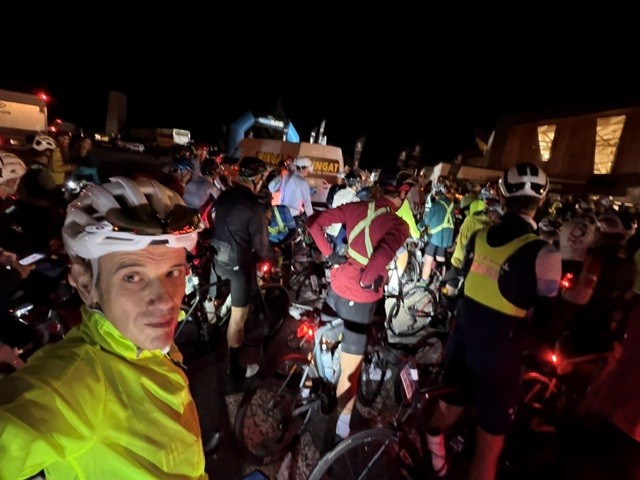
5:00. Pistoletazo de salida. 580 valientes descendiendo por la carretera oscura, bien iluminada por todas las luces, como un reguero de luciérnagas blancas y rojas. Por fin se acaba el descenso; iré de los últimos seguro, he bajado extremando las precauciones. Enseguida el terreno se pone hacia arriba. Los dos primeros puertos son fáciles, Vaudagne y Col des Montets, lo que vendrían a ser de tercera categoría, voy cogiendo ritmo. Amanece pronto en los Alpes: a las 6:00 ya es totalmente de día y va a lucir un sol radiante en la primera parte de la ruta. Eso me anima. La visión del Mont Blanc al paso por Chamonix es sencillamente espectacular, menuda montaña.
5:00. The gun goes off. 580 brave souls descending the dark road, lit up by all our lights, like a trail of white and red fireflies. The descent finally ends; I'll be among the last for sure — I came down taking every precaution. Soon the terrain tilts upwards. The first two climbs are easy, Vaudagne and the Col des Montets, third-category stuff, and I start finding my rhythm. Dawn comes early in the Alps: by 6:00 it's fully light and a radiant sun is going to shine on the first part of the route. That lifts me. The view of Mont Blanc passing through Chamonix is simply spectacular — what a mountain.
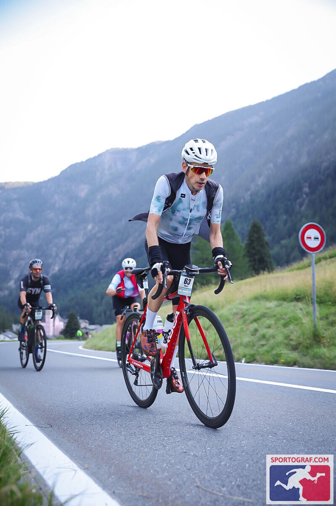
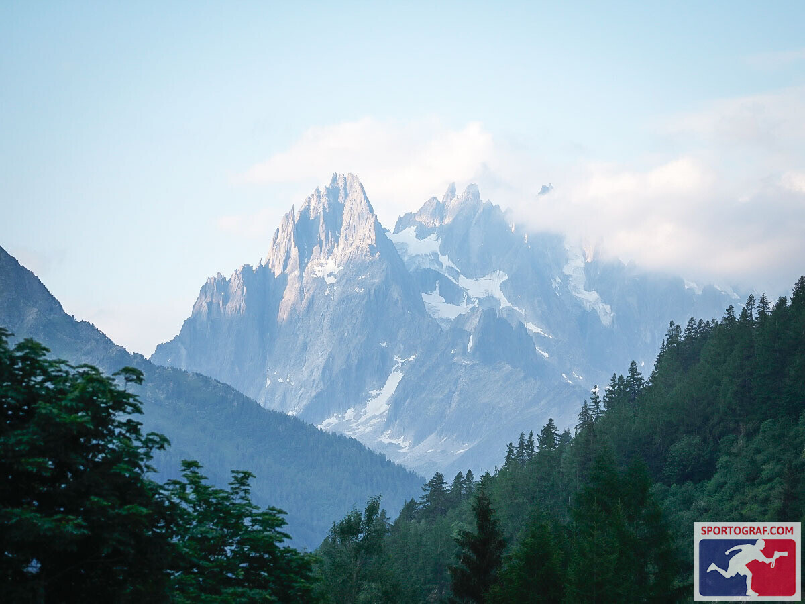
Col de la Forclaz
1.527 mTercer puerto, el Col de la Forclaz, algo más serio ya, lo que vendría a ser un segunda categoría. Sigo a buen ritmo y no paro de adelantar corredores. Objetivo: subir a 3 w/kg, lo que es mi límite entre Z2 y Z3, básico no pasarse y regular: es un buen ritmo que puedo mantener mucho tiempo. Sigo comiendo, mi estrategia de nutrición era simple, alarma cada 45' en el Garmin para ir rotando gel de 30CH, barrita de 30CH y gel de 45, todo ello complementado con CH en un bidón siempre, para llegar al objetivo de ingerir 60-70CH por hora.
Bajada rapidísima a un valle precioso y llegamos a Martigny, ya en Suiza.
Primera parada para avituallarnos: km 110 y unos 1.800 m+ hasta ahora, a 27 km/h de media, y me encuentro genial. Eso sí, lo serio empezaba realmente ahora, no habíamos hecho más que calentar, y los siguientes cinco colosos no iban a ser tan fáciles de conquistar.
Third climb, the Col de la Forclaz, a more serious affair now — second-category territory. I keep a good pace and don't stop overtaking riders. The target: climb at 3 w/kg, which is my threshold between Z2 and Z3. The key is not to overdo it and to pace steadily: it's a rhythm I can hold for a very long time. I keep eating; my nutrition strategy was simple — an alarm every 45 minutes on the Garmin, rotating a 30g-carb gel, a 30g-carb bar and a 45g gel, always topped up with carbs in a bottle, aiming to take in 60-70g of carbs per hour.
A lightning-fast descent into a gorgeous valley and we reach Martigny, in Switzerland now.
First feed stop: km 110 and around 1,800 m of climbing so far, averaging 27 km/h, and I feel fantastic. That said, the serious part was only just beginning — we had merely warmed up, and the next five giants would not be conquered so easily.
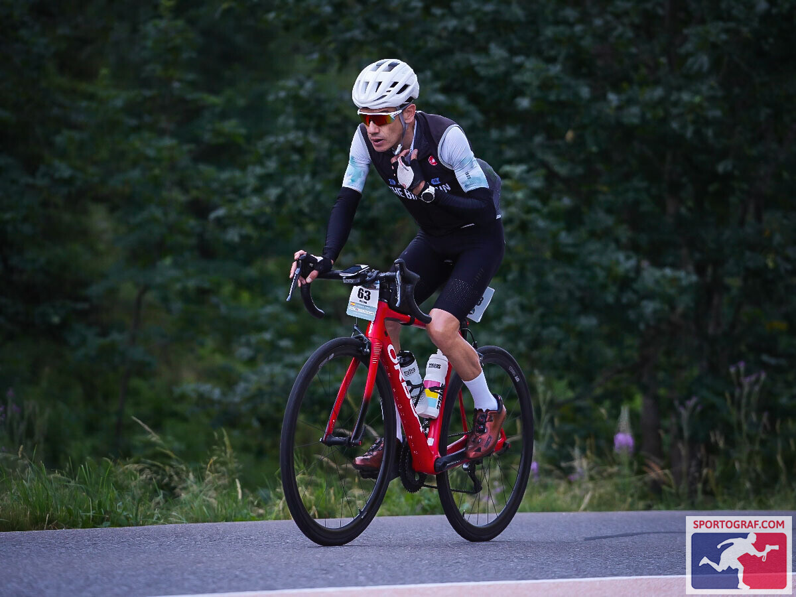
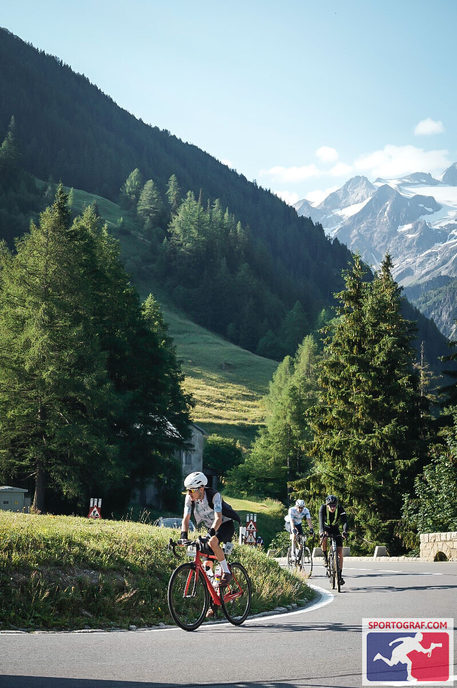
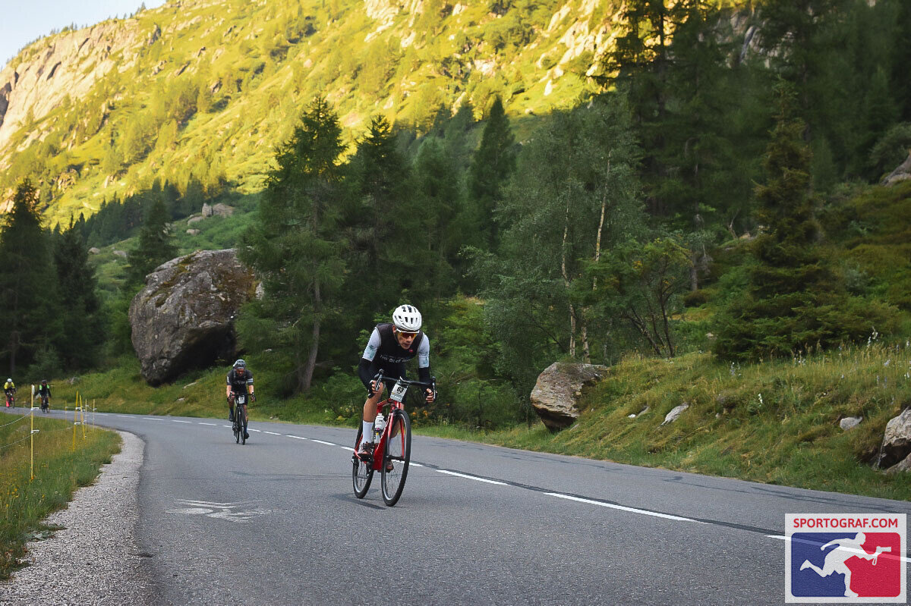
Champex
11 km · 8,1 %El primero de ellos es Champex. En el perfil de la prueba no destaca —imaginad los otros— y sin embargo estamos hablando de 11 km al 8,1 % de media, unos números muy similares a los del Alpe d'Huez. Me van estos puertos y, cuando me quiero dar cuenta, ya estoy arriba. Me paro en una fuente junto al lago del mismo nombre; es un sitio precioso y bien merece la pena detenerse a tomar unas fotos. El día, hasta ahora, espectacular.
The first of them is Champex. It barely stands out on the race profile — imagine the others — and yet we're talking about 11 km at 8.1% average, numbers very similar to Alpe d'Huez. These climbs suit me and, before I know it, I'm at the top. I stop at a fountain by the lake of the same name; it's a beautiful spot, well worth pausing for a few photos. The day, so far, spectacular.
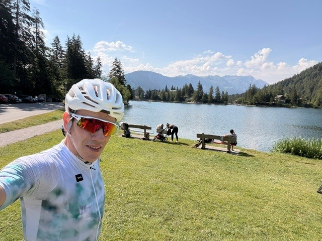
Grand Saint Bernard
35 km · 5,1 % · 2.450 mTras una corta bajada llega la gran bestia parda del día, el paso de Suiza a Italia, el Grand Saint Bernard: 35 km al 5,1 %, con los últimos 5 km al 9 %, elevándose hasta los 2.450 m. Una friolera de 1.900 m de desnivel en un solo puerto, más de dos horas de ascensión. Cojo ritmo crucero y sigo adelantando corredores, lo cual me motiva; sin embargo, el tráfico de este puerto y sus largos túneles hacen que vayas incómodo todo el rato. Y lo peor está por llegar: a 2 km de la cima el cielo se vuelve negro y de repente empieza a diluviar. La temperatura arriba cae hasta los 10 grados; las peores previsiones se han cumplido. Por suerte había dejado en la cima cubrebotas, chaqueta y guantes de invierno. Aun así, el aguacero hacía impracticable bajar, por lo que me resguardo en un bar durante 15 minutos. El agua amaina un poco y me lanzo al descenso, muerto de frío pese a la ropa: la sensación térmica debía de rondar los 5 grados a esa altitud. Primera curva y casi me la pego; frenos de zapata y ruedas de carbono hacen que la bici literalmente no frene. Bajo más despacio de lo que subo.
Misterios de los climas de montaña: cuando llego a la cota 1.800 aparece el sol y la carretera está más seca, así que me dejo caer hasta el Valle de Aosta, ya en Italia. La diferencia de temperatura es abismal —de 10 grados arriba a 30 en el valle—, por lo que me quito toda la ropa de invierno y la tiro a la basura: no podía cargar con ella y era vieja, precisamente en previsión de esta situación.
After a short descent comes the great beast of the day, the crossing from Switzerland into Italy, the Grand Saint Bernard: 35 km at 5.1%, with the final 5 km at 9%, rising to 2,450 m. A staggering 1,900 m of climbing in a single pass, more than two hours of ascent. I settle into cruise mode and keep passing riders, which motivates me; the traffic on this climb and its long tunnels, however, keep you on edge the whole time. And the worst is yet to come: 2 km from the summit the sky turns black and it suddenly starts pouring. The temperature at the top drops to 10 degrees; the worst forecasts have come true. Luckily I had left overshoes, a jacket and winter gloves at the summit. Even so, the downpour made descending impossible, so I shelter in a bar for 15 minutes. The rain eases a little and I launch into the descent, frozen stiff despite the clothing: the wind chill must have been around 5 degrees at that altitude. First corner and I nearly crash; rim brakes and carbon wheels mean the bike literally will not stop. I descend slower than I climb.
Mysteries of mountain weather: when I reach 1,800 m the sun comes out and the road is drier, so I let myself roll all the way down to the Aosta Valley, in Italy now. The temperature difference is staggering — from 10 degrees up top to 30 in the valley — so I strip off all the winter clothing and throw it in the bin: I couldn't carry it, and it was old gear, chosen precisely with this situation in mind.
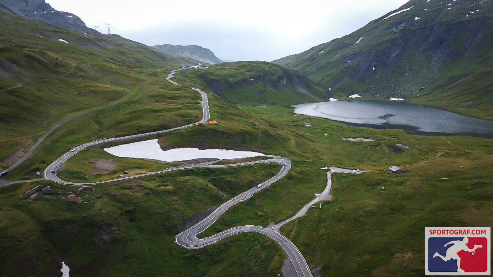
Petit Saint Bernard
15 km · 6 % · 2.200 mIniciamos otro de los peores tramos de la ruta, 30 km hasta el siguiente puerto, siempre picando hacia arriba y con muchísimo tráfico y viento en contra, los ciclistas vamos tan desperdigados a estas alturas que no hay grupos, luchas solo. Llego por fin al pie del tercer coloso del día, el Petit Saint Bernard, que de pequeño no tiene nada: unos 15 km al 6 % de media, coronando a 2.200 metros. No es moco de pavo. Se vuelve a poner a diluviar, buen momento. Me pongo el chubasquero y los cubrebotas, y a subir. Sigo pudiendo mantener un buen ritmo constante de 2,8-3 w/kg y coincido durante unos 10 km con un ciclista portugués muy agradable, con quien converso en inglés, pero me dice que va a bajar el ritmo y sigo solo. A 5 km de la cima, de repente, mi estómago empieza a quejarse y me avisa de que no puede tomar nada más: se me cierra totalmente, gran problema pues aún queda bastante. Por suerte, al coronar ha dejado de llover y paro a hacer unas fotos. El sitio, cómo no, espectacular, con estatua de perro San Bernardo incluida.
We begin another of the worst stretches of the route: 30 km to the next climb, always false-flat uphill, with heavy traffic and a headwind. By this point the riders are so scattered that there are no groups — you fight alone. I finally reach the foot of the third giant of the day, the Petit Saint Bernard, which has nothing "petit" about it: some 15 km at 6% average, topping out at 2,200 metres. No small thing. It starts pouring again — perfect timing. Rain jacket and overshoes on, and up we go. I can still hold a steady 2.8-3 w/kg and I ride for about 10 km with a very friendly Portuguese cyclist, chatting in English, until he tells me he's going to ease off and I continue alone. Five kilometres from the summit, out of nowhere, my stomach starts complaining and tells me it can't take anything more: it shuts down completely — a big problem, because there's still a long way to go. Luckily, by the top it has stopped raining and I stop for some photos. The place, of course, spectacular — Saint Bernard dog statue included.
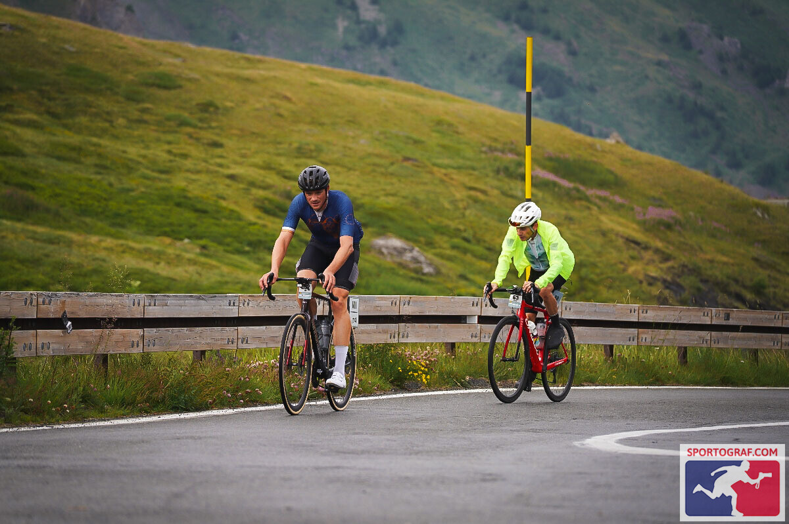
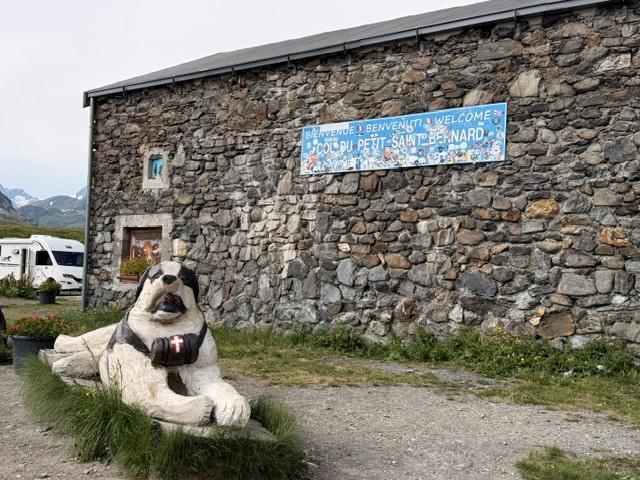
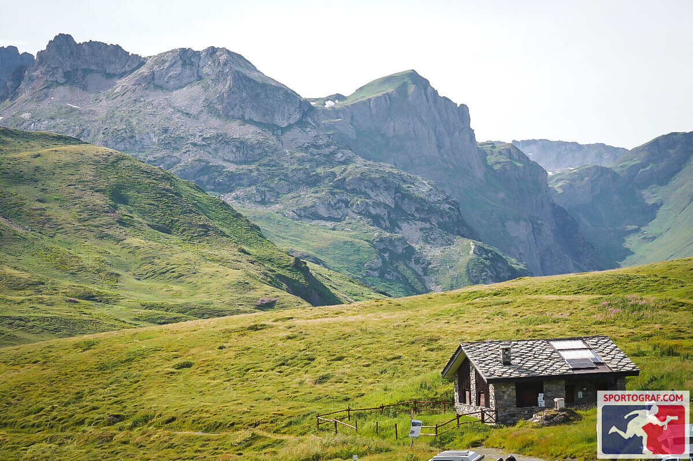
Cormet de Roselend
19 km · 6 %Inicio la bajada y llego a la localidad de Bourg-Saint-Maurice. Solo 57 km a meta y dos puertos, «solo» otros 2.000 m+ por delante. El cuarto coloso en discordia es el Cormet de Roselend, otra ascensión preciosa, de las que más me gustaron, pero sus 19 km al 6 % de media se cobran su peaje: mi ritmo empieza a descender, no soy capaz de subir a más de 2,5 w/kg, las fuerzas ya flaquean y además sigo sin poder tomar ningún gel. En el avituallamiento de arriba al menos como fruta y galletas; eso sí me entra, algo es algo, pero no suficiente.
I start the descent and reach the town of Bourg-Saint-Maurice. Only 57 km to the finish and two climbs — "only" another 2,000 m+ ahead. The fourth giant in question is the Cormet de Roselend, another gorgeous ascent, one of my favourites, but its 19 km at 6% average take their toll: my pace starts dropping, I can't push above 2.5 w/kg, my strength is fading, and on top of that I still can't stomach a single gel. At the feed station on top I at least manage fruit and biscuits; that goes down — something is something, but not enough.
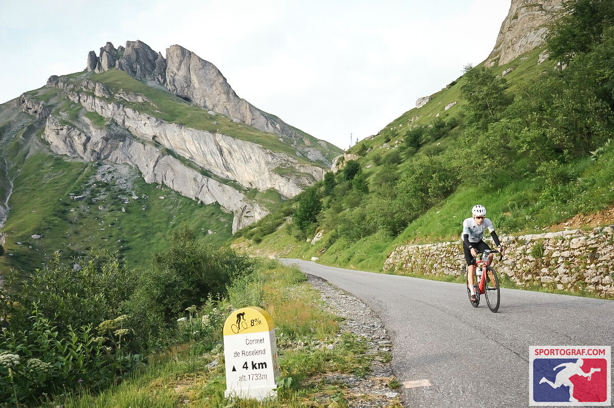
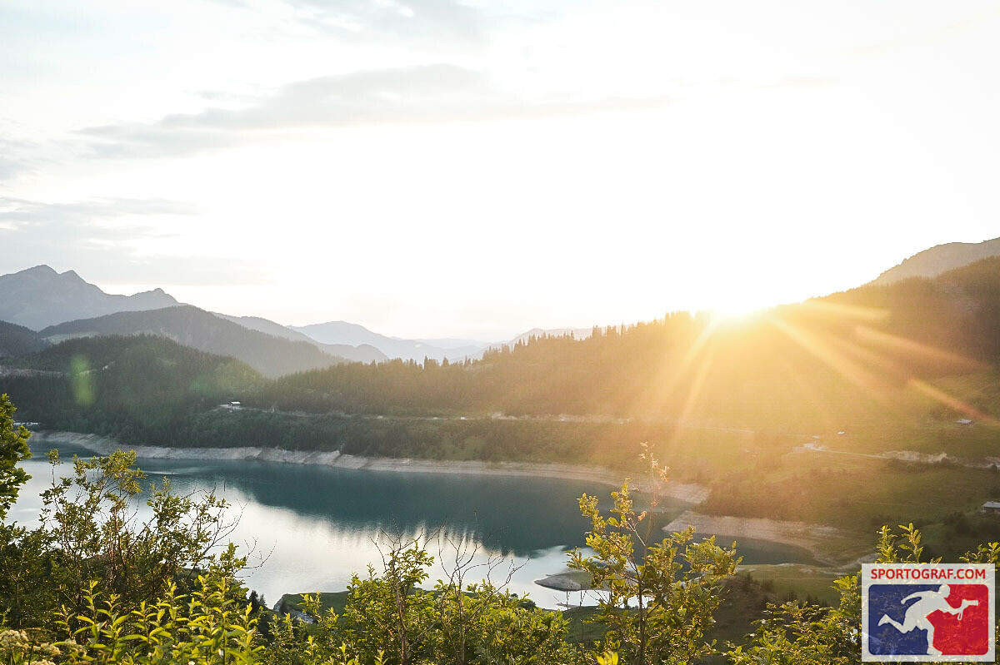
Les Saisies
15 km · 6 % · MetaFinishMe dejo caer sin apenas pedalear y llego a la base del último puerto, Les Saisies, donde tengo el apartamento arriba y cuyo camino conozco bien de haberlo subido varias veces en coche. Sobre el papel no es complicado, pero sé que sus 15 km al 6 % se van a sentir como si estuviera ascendiendo el propio Mont Blanc. Y así es: una subida que en condiciones normales me debería llevar una hora me cuesta una hora y media. Mi ritmo ha decaído mucho, pero sé que ya está hecho; me da igual todo, solo pienso en llegar. Voy ya solo, nadie por delante, nadie por detrás.
Son casi las 22:00 y se ha hecho de noche; enciendo la luz delantera. Me ha tocado parar más de la cuenta por la lluvia —habría podido ganar más de media hora sin problema—, pero todo eso ya da igual. Dos kilómetros, ya veo el pueblo. Último kilómetro, muy empinado, aunque a mí me parece literalmente vertical. No siento las piernas; subo porque la gente del pueblo no para de aplaudir y gritar el clásico "Allez, allez!". Y por fin llego a la meta, donde me espera mi mujer. Al parar no puedo evitar echarme a llorar mientras la abrazo.
La experiencia ha sido increíble y la organización de la carrera, muy buena. Lástima del tiempo, pero en estos sitios ya se sabe.
I coast down barely pedalling and reach the base of the final climb, Les Saisies, where my apartment waits at the top and whose road I know well from driving it several times. On paper it isn't hard, but I know its 15 km at 6% are going to feel like climbing Mont Blanc itself. And so it is: an ascent that should take me an hour in normal conditions costs me an hour and a half. My pace has collapsed, but I know it's done; nothing matters anymore, I only think about arriving. I'm alone now — nobody ahead, nobody behind.
It's almost 22:00 and night has fallen; I switch on my front light. The rain forced me to stop more than I should have — I could easily have saved over half an hour — but none of that matters now. Two kilometres, I can see the village. Final kilometre, very steep, though to me it feels literally vertical. I can't feel my legs; I climb because the people in the village won't stop clapping and shouting the classic "Allez, allez!". And at last I reach the finish line, where my wife is waiting. As I stop, I can't help bursting into tears as I hug her.
The experience has been incredible and the race organisation excellent. A shame about the weather, but in these places, that's how it goes.
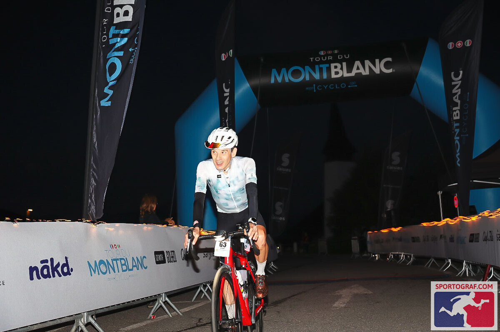
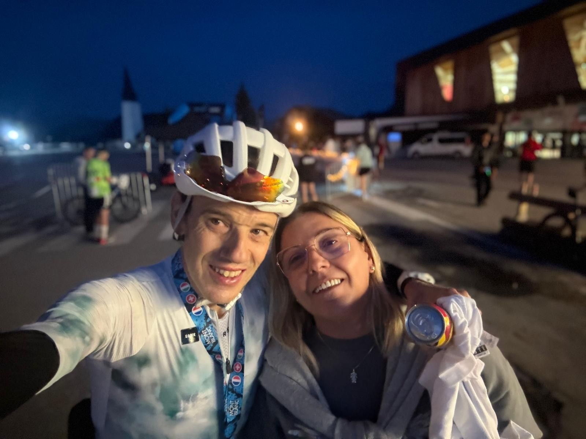